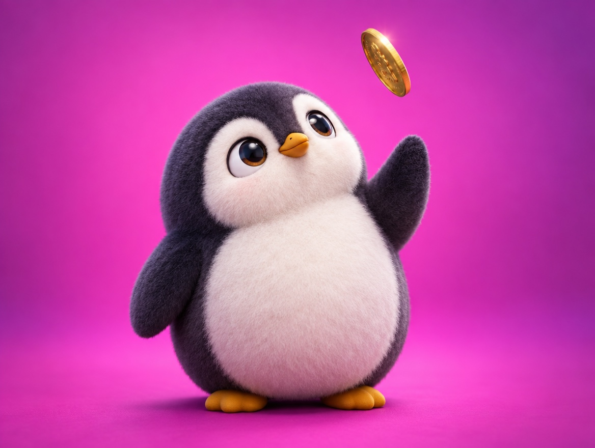

📝 DRAFT · 下書き — まだ本番に出していません · 下書き一覧
🐧 EVERYDAY LIFE⚡ 19 SEC
When you can't decide, toss a coin and watch your first feeling 🪙

Coin Rule
When you can't decide, set a rule, "Heads I do it, tails I don't," and toss a coin.
First Feeling
The important thing is your feeling the moment you see the result.
Real Heart
If you think "Yay!", that is your real heart.
If you feel let down, your real heart is the other way.
⚡ TRY IT
🪙 The real-heart coin
1. Pick something you can't decide.
⭕ Heads = Do it!❌ Tails = Don't.
⭕ Heads! "Do it!"
❌ Tails! "Don't."
😳 Quick! How do you feel right now?
💖 Your real heart says: DO IT!
💖 Your real heart says: don't do it.
📋 Do your research first, then follow your heart.
Research First
But do your research first.
📚 I learned this from the Japanese blog "Panda no Ondo".